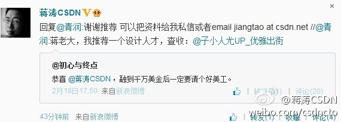
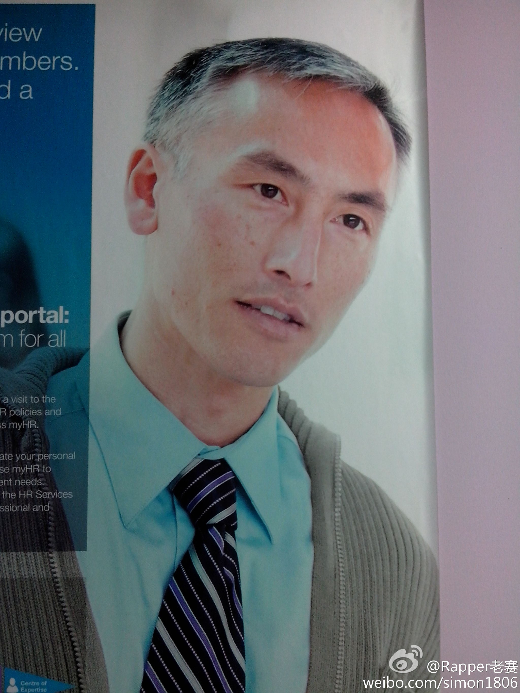
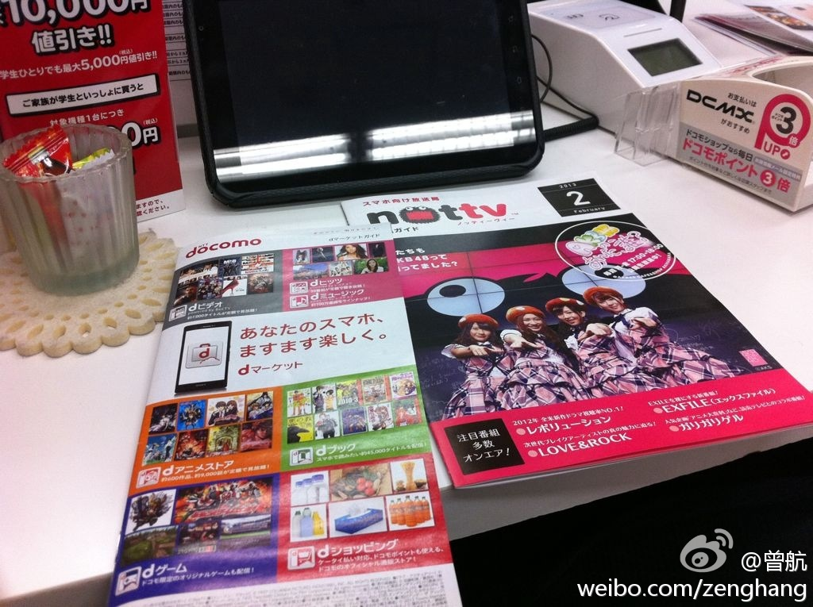

@青润 是2007年的CSDN大斑竹? 好严格。 @莫依daisyli 也是曾经的大斑主，后来被CSDN请来成为版主的管理员，也是定了很多的严格规则。 规则不在于是否严格，而在于是否有效。中国的法律体系一向是很严格的。@蒋涛CSDN:分享自青润 《[软件人生]回顾csdn上2007年的那一场论坛冲突搏杀 - 本文有给csdn做广告的嫌疑，但是，确实是对过去的一段回忆，想到蒋老大融资成功，就感到高兴， 网页链接 ／谢谢一直以来的支持 社区运营需要规则 人数越多越重要 这一点我们得向stackoverflow好好学习 @Ada李力 
明俊有件夹棉的皮衣，我买的，他不喜欢，一直不肯穿，放了好几年。今年我找出来穿了几次，他发现皮子破了不少处。但之后，看到明俊天天在家穿着这件皮衣，我问为什么不扔掉，他说只在家穿。奇怪，衣服好好的时候，为什么不在家穿呢？
这人是谁？@Rapper老赛:这是典型外资公司中高层经理的写照：帅气的面庞透露着年轻，和花白的头发很不相称。坚毅的眼神中透露着对事业的执着和本公司的忠诚；自信的表情能看出术业专攻，训练有素，经验丰富。。。只是事业，家庭，孩子的重任一人挑着，沉甸甸的。。。还有一个同样在外企奋斗和不会煲汤的太太。。。 
//@Jackwheel:转发微博@曾航:今天在日本考察了一天移动互联网发展的最新情况。日本最近表现出来的一些趋势让我感到震惊。4G开始普及后，一些年轻人开始不用任何一个运营商的手机号，他们用虚拟运营商的产品，享受极低的资费，所有服务都通过网络解决。未来几年，有大事要发生了 